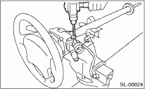
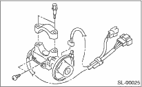

1. Disconnect the ground cable from the battery.
2. Remove the steering column. 
3. Secure the steering column in a vise. Remove the bolt with a drill.

4. Remove the ignition key lock.
5. Use a new tone bolt. Tighten the tone bolt to the end.
